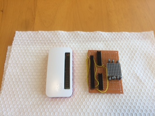
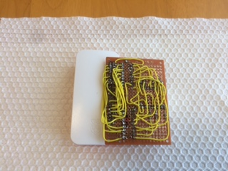
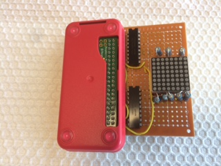

Raspberry Piは、本体基板の価格は680円程度と非常に安価なコンピューターで、その割にはかなり高性能であり、OSにLinuxやWindows10が使用できます。またGPIOがついているので、これをインタフェースとして、色々なセンサーやデバイスを接続することができます。
私も、遅まきながら、Raspberry Piを購入して、さらに自作HWをつなげて遊んでみました。ネットには、もっと凝ったものはたくさんありますが、私はあまりお金も時間もないのであまり凝ったことができません。
ということで、秋葉原で何となく買った、8x8 LEDマトリックスを使って、日時をスクロール表示するシンプルな時計のようなものを作成しましたので、紹介します。
書籍や、他のHPにもたくさん記事があるのでそちらを参照してください。
私は、あまり、セットアップ等に煩わされたくなかったので、Raspberry Piは、Wi-FiつきのZero WHのセットをAmazonで購入しました。
今回、OSはRaspberry Pi標準のRaspbian(Linux)をインストールしました。
部品表と結線図は、こちらを参照してください。
試作ボードは、穴あきベーク板にジャンパー線をはんだ付けして作成しました。
部品代は全部で1,000円程度です。
8x8 LEDマトリックスは、8端子あるアノード端子をOPEN又は5Vを印可し、8端子あるカソード端子にOPEN又はGNDに接続することで、任意のLEDを点灯させることができます（そのままだと過電流となるため、直列に100～150Ω程度の抵抗をいれる）。
Raspberry Piからは、GPIO出力をソースドライバー／シンクドライバーというトランジスタアレイを介して制御します。
8x8 LEDマトリックスは、アノード8端子＋カソード8端子＝16端子となるので、GPIOを16端子分使用します。Raspberry PiのGPIOは、0～26の27端子あるので数としては足ります。
Rasberry Piのヘッダピンに接続できるように、穴あきベーク板側にPCB ソケット（2 列×20P ）を取り付けています。
LEDマトリックスは、任意の行、又は列について点灯パターンを制御することができます。但し、複数行は同時制御できないので、各行順次ON/OFFしながらの表示となります（切り替えが速いので人間の目にはわからない）。
＜写真＞



ソースコードは、こちらから、ダウンロードしてください（LedWatch.zip）。
Raspberry Piのプログラム言語は、Pythonの使用を想定しています。このため、各種ライブラリーも、Python用となっています。
私も今回少しばかりPythonをかじってみました。しかしながら、GPIO制御ライブラリをダウンロードしようとしてうまくいかず、気の短い私としては、ライブラリを必要としない方法として昔懐かしいC言語で進めることにしました。
各サブルーチンの説明を以下に記載します
| 関数名 | 説明 |
| MapGPIO | メモリデバイスをオープンして、物理メモリを仮想メモリ上にマップする（初期化処理） |
| UnmapGPIO | メモリデバイスをクローズする（使っていない） |
| InitGPIO | GPIO端子をOUT/INのいずれかに設定する処理。引数：GpioNo=GPIO番号、data=0ならIN設定、data=1ならOUT設定 |
| OutOnGPIO | 指定したGPIO端子をONにする処理。引数：GpioNo=GPIO番号 |
| OutOffGPIO | 指定したGPIO端子をOFFにする処理。引数：GpioNo=GPIO番号 |
| FontInit | フォントファイル(MSKG.FNT)読み込み、メモリ上の一部フォント(SP,':','/')の位置を移動 |
| write_font | 文字列をLEDマトリックスに表示する |
C言語では、GPIOレジスタをメモリマップしてアクセスする形になります。
具体的には、ソースコードの、MapGPIO関数を参照してください。
また、本ソースコードでは、GPIOのアドレス(GPIO_BASE)は、以下のように定義しています。
Raspberry Pi Zero と、Raspberry Pi 2ではGPIOのアドレスが異なります。
本ソースコードは、Raspberry Pi Zero用となっています。
Raspberry Pi 2では、下記のコメントアウト行の方を有効にすればうまくいくはずです（試していません）。
Raspberry PiのGPIO制御用レジスタには、以下の３種類があります。
| No | 種類 | 説明 |
| １ | GPIOの機能を設定するレジスタ | 各GPIOを出力にするか、入力にするかの機能を設定する |
| ２ | GPIO出力を設定するレジスタ | 各GPIOをOn(5V）にする |
| ３ | GPIO出力をクリアするレジスタ | 各GPIOをOff(0V）にする |
プログラムの起動時にNo.1でGPIOの機能を設定し、No.2でON,No.3でOFF制御を実施します。
各レジスタの仕様をまとめたものと、このレジスタの制御を実施しているコード部分についての説明をPDFにまとめました。こちらを参照してください
LEDマトリックスを構成する各LEDの行番号および列番号と、そこに接続されているGPIOピンの番号はそれぞれ以下の配列で定義しています。
GXが横方向で、GYが縦方向になりますので結線を変えた場合はこちらを調整してください。
GPIOへのアクセスの詳細は、末尾の【参考】に記載されているHPの記事を参照にしてください。
本プログラムでは、フォントファイルをロードして、そのビット配置に応じて、LEDマトリックスの各LEDを点灯／消灯させています。
フォントファイルは、美咲フォントというものを使用しています。
「PC-E500 SCRNJPN.FNT 形式」を使用しています。
実行時に、HPからダウンロードした「MSKG.FNT」ファイルを同じディレクトリにコピーしてください。
但し、PC-E500形式でのフォントの並びがASCII配列、UNICODEや、SJISなどとは一致しておらずどうなっているのかわかりませんでした。
ASCII配列と一部かぶっていたので、その部分に対して適当にオフセット計算しています。また、スペース、'/'、':'なども全然違うところにあるため、初期化時に無理やり配置しなおしています。
このため、折角の漢字FONTなのに、漢字が使えない状態となっています。
これに関しては、今後の課題です。
なお、文字は90度横になっているため、スクロール処理にビットシフトが不要であり、簡単にすることができています。
コンパイルは、LedWatch.cをgccでコンパイルします。
コンソールから下記のようにインプットすると、"LedWatch"という実行ファイルが作成されます。
実行は、以下のように入力してください。
【重要】事前に【４－３】に記載した「MSKG.FNT」を同じディレクトリにコピーしておく必要があります。
停止はプログラミングしていないので、[CTRL]+[C]で強制終了させてください。
【改訂記録】
2018/05/13版：公開
2018/05/20版：誤記修正・写真追加
2018/05/30版：GPIOレジスタを説明するPDFを追加、それに合わせて文章を修正
2026/03/22版：リンク切れ修正、レスポンシブ対応